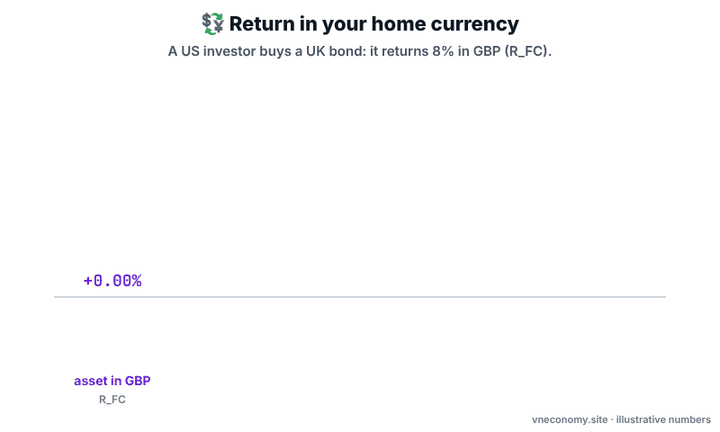
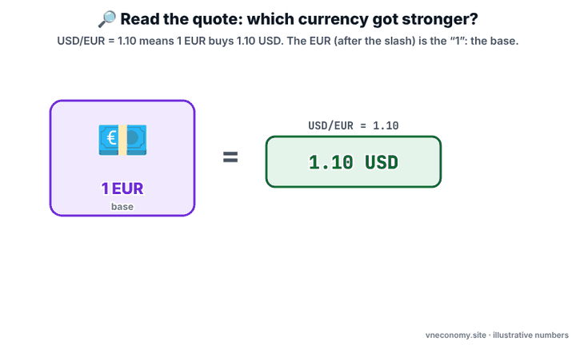
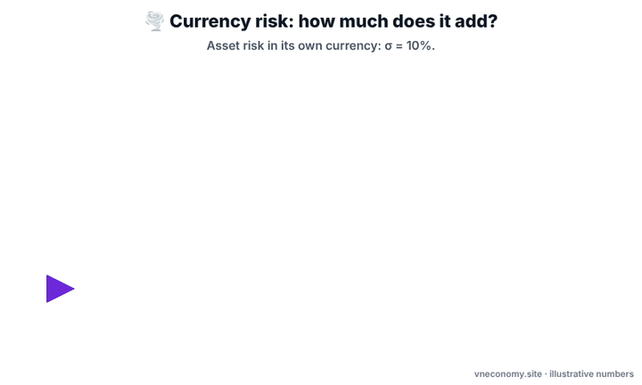
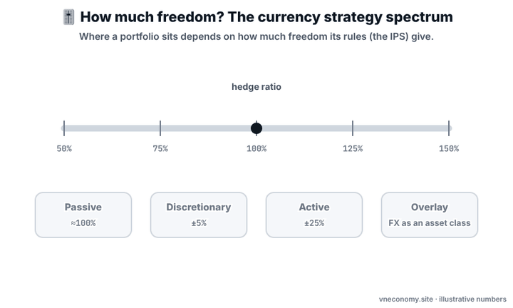
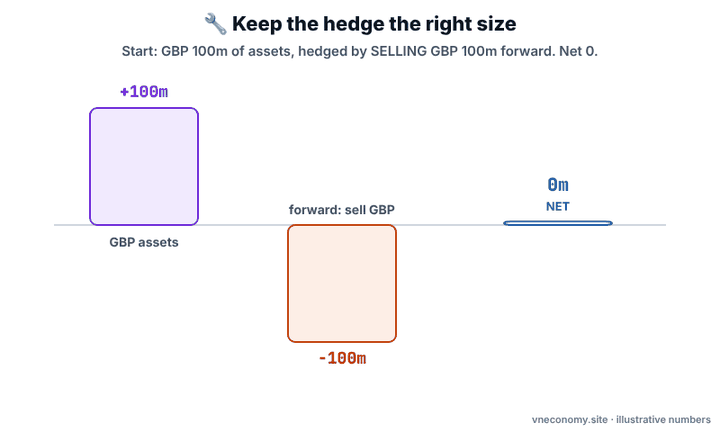
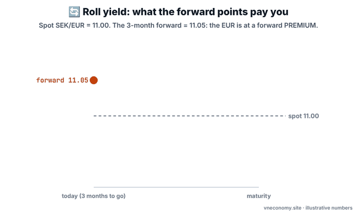
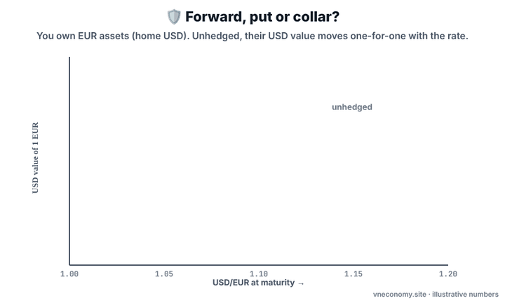
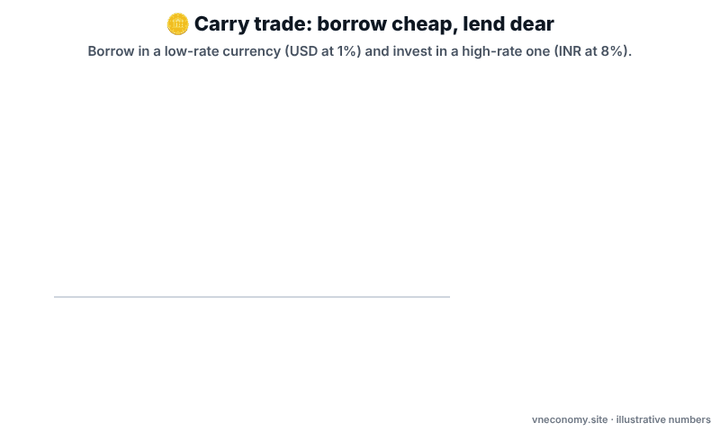
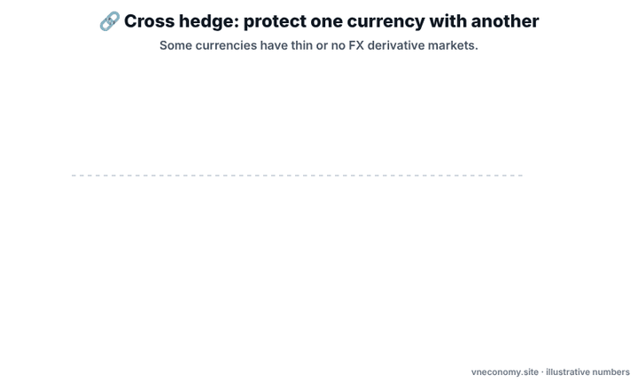

CFA study · Currency
Currency management: the mechanics, step by step
Nine animated clips on the currency risk of an international portfolio: the return in your home currency, how much to hedge, and the tools for doing it
Key points
- One return formula: R_DC = (1 + R_FC) × (1 + R_FX) − 1. If the foreign currency rises, the home return beats the foreign-currency return, and the reverse. Check which currency is the base before deciding.
- How much to hedge is set by the IPS: a narrow band around 100% is passive, ±5% is discretionary, a wide band aimed at alpha is active, and an outside specialist is an overlay. Correlation changes risk, never the expected return.
- Every tool has a price: forwards cost nothing upfront but give away the upside and need rebalancing; options keep the upside for a premium; carry earns the rate gap but fears volatility; a cross hedge leaves basis risk.
The third part, after the option payoff guide and swaps, forwards and futures. Each clip runs about 20 seconds, then holds the answer for 4; beside it are the question, the formula, the answer and why it works.
1 · Return and risk in your home currency
Every currency question starts with one multiplication: the asset’s return in its own currency times the move of that currency against yours. Risk adds up according to the correlation.
R_DC = (1 + R_FC) × (1 + R_FX) − 1 · positive R_FX = the foreign currency got stronger

Question
A US investor’s UK bond returns 8% in GBP, and the GBP rises 3% against the USD. What is the return in USD? And if the GBP falls 3%?
Formula
R_DC = (1 + R_FC) × (1 + R_FX) − 1
Answer
1.08 × 1.03 − 1 = 11.24% · if the GBP falls: 1.08 × 0.97 − 1 = 4.76%
Why it works
You earn the asset’s return, then convert it at the new exchange rate, so the two returns multiply. The small cross term (0.08 × 0.03 = 0.24%) is why simple addition is slightly off. Working backwards: R_FX = (1 + R_DC) ÷ (1 + R_FC) − 1.

Question
USD/EUR moves from 1.10 to 1.15. Which currency got stronger, and what is the USD return for an investor whose home currency is the EUR?
Formula
USD/EUR = USD per 1 EUR · USD return to a euro investor = old ÷ new − 1
Answer
The EUR (base) buys more USD, so the EUR strengthened and the USD weakened · 1.10 ÷ 1.15 − 1 = −4.35%
Why it works
The currency after the slash is the “1”. If the number rises, that base currency got stronger. Then ask whose money is the home currency: a foreign currency that weakens lowers your home return (R_DC < R_FC).

Question
An asset has 10% volatility in its own currency and the currency has 8%. What is the home-currency volatility if their correlation is −0.3? And +0.5?
Formula
σ²(R_DC) ≈ σ²(R_FC) + σ²(R_FX) + 2 × ρ × σ(R_FC) × σ(R_FX)
Answer
ρ = −0.3: 100 + 64 − 48 = 116 → 10.8% · ρ = +0.5: 100 + 64 + 80 = 244 → 15.6%
Why it works
Like two pushes at an angle: when they point the same way (positive ρ) the total is bigger, when they partly oppose (negative ρ) currency risk can even help. Correlation changes RISK only; the expected return is unchanged.
2 · How much to hedge, and keeping it right
The investment policy statement (IPS) sets how far the hedge may move from neutral. The hedge then has to stay the right size as asset values change, and the forward points decide whether hedging pays you or costs you.

Question
An IPS allows a hedge ratio of 97–103%. Another allows ±5% around neutral, a third ±25% “to add alpha”, and a fourth hires an outside currency specialist. Which strategy is each?
Formula
Freedom of the band → passive · discretionary · active · overlay
Answer
97–103% → passive · ±5% → discretionary · ±25%, alpha → active · outside specialist → currency overlay
Why it works
The narrower the band, the less room for views. Choose by the client: low risk tolerance, short horizon, liquidity needs, bond-heavy → hedge more and stay passive; long horizon, equity-heavy, views and skill → hedge less and allow more discretion.

Question
GBP assets of 100m are hedged by selling GBP 100m forward. The assets fall to 93m. How do you rebalance?
Formula
New hedge = new asset value · trade = new hedge − old hedge
Answer
The hedge is 7m too big (over-hedged, net short GBP 7m) → buy GBP 7m forward to the same maturity date
Why it works
A static hedge matched to the value on day one drifts as asset values and exchange rates move. A dynamic hedge rebalances back to the target, at the price of more trades and bid–offer costs. Higher tolerance for drift means fewer, cheaper rebalances.

Question
Spot SEK/EUR is 11.00 and the 3-month forward is 11.05. A hedger sells EUR forward. What roll yield does the hedge earn if spot stays at 11.00? What if the forward were 10.95?
Formula
Roll yield (short forward) ≈ (forward − spot) ÷ spot
Answer
(11.05 − 11.00) ÷ 11.00 = +0.45% per quarter · at 10.95: −0.45% (a cost)
Why it works
A forward converges to spot as it matures. If you SELL the base currency at a forward premium, that slide works for you; at a forward discount it works against you. The forward premium mirrors the interest-rate gap between the two currencies.
3 · Tools: options, carry and cross hedges
Each tool trades one thing for another: a premium for the upside, a rate gap for crash risk, liquidity for basis risk.

Question
You hold EUR assets (home USD), spot 1.10. Compare a forward at 1.10, a put at 1.08 costing 0.01, and a collar: the same put plus a written call at 1.13 for 0.008.
Formula
Put floor = K − premium · collar: floor = K put − net cost, cap = K call − net cost
Answer
Forward: locked at 1.10 · put: floor 1.07, upside open · collar: net cost 0.002, floor 1.078, cap 1.128
Why it works
A forward removes both downside and upside at no upfront cost. A put keeps the upside but costs a premium. Writing an option (collar, seagull) earns premium back but gives up some upside: cheaper protection always means giving something up.

Question
Borrow USD at 1% and invest in INR at 8%, unhedged. What do you earn if the INR is unchanged, falls 5%, or falls 10%?
Formula
Return ≈ (1 + r_high) × (1 + change in high-rate currency) − (1 + r_low)
Answer
Unchanged: +7% · INR −5%: 1.08 × 0.95 − 1.01 = +1.6% · INR −10%: −3.8%
Why it works
Interest-rate parity says the high-rate currency should fall by the rate gap; the carry trade bets that it will not (the forward rate bias). It earns small, steady gains and suffers rare crashes when volatility jumps: a negatively skewed return.

Question
A currency has no liquid derivatives. A liquid proxy currency has a correlation of 0.8 with it; their volatilities are 12% and 10%. What hedge ratio minimises variance, and what risk remains?
Formula
h* = ρ × σ(exposure) ÷ σ(proxy)
Answer
0.8 × 12% ÷ 10% = 0.96 of the exposure, hedged with the proxy · what remains is basis risk
Why it works
A cross hedge protects one currency with another that moves with it, so it is only as good as the correlation. For a currency that cannot be delivered, a non-deliverable forward (NDF) settles only the gain or loss, usually in USD.
Method and sources
All numbers are illustrative, not market prices. The formulas used in the clips:
- R_DC = (1 + R_FC) × (1 + R_FX) − 1 · backwards: R_FX = (1 + R_DC) ÷ (1 + R_FC) − 1. For several currencies, weight each R_DC by its portfolio weight.
- σ²(R_DC) ≈ σ²(R_FC) + σ²(R_FX) + 2ρσ(R_FC)σ(R_FX).
- Roll yield of a short forward ≈ (forward − spot) ÷ spot · forward points mirror the interest-rate gap.
- Put floor = strike − premium · collar: floor and cap less the net premium.
- Minimum-variance hedge ratio h* = ρ × σ(exposure) ÷ σ(hedge instrument).
Personal study material, not investment advice.